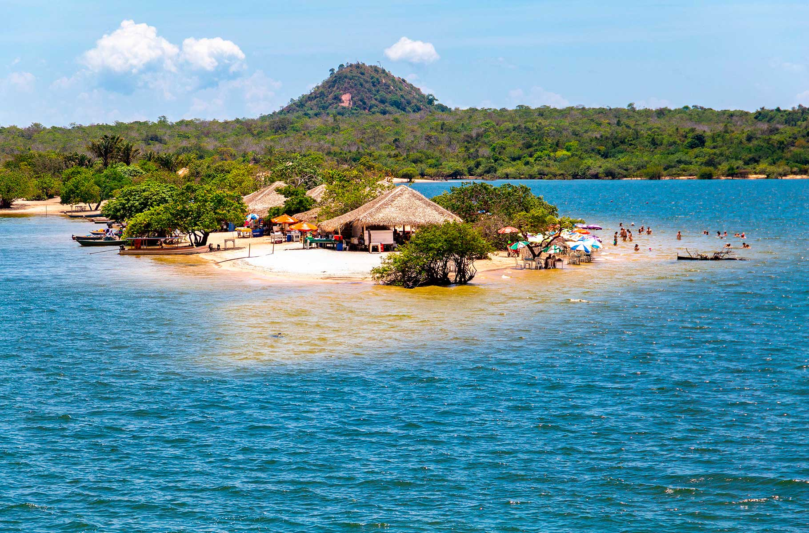
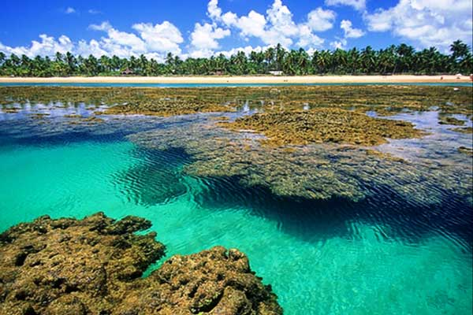
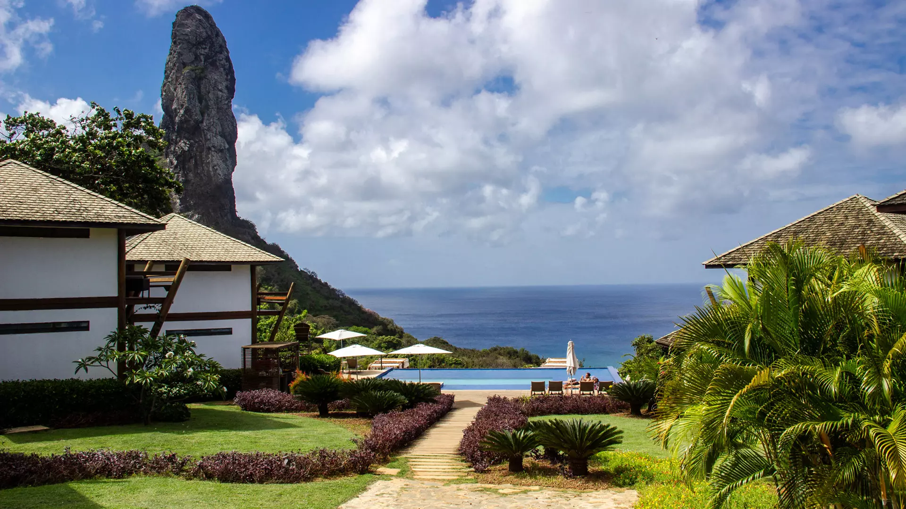
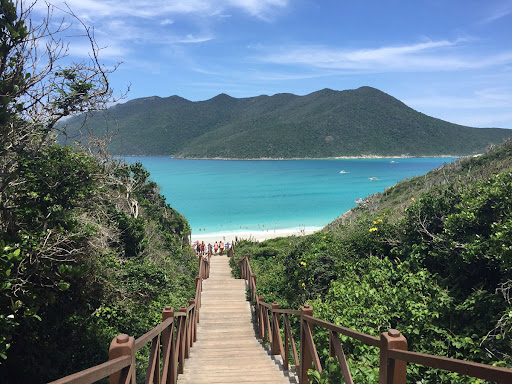

Praias do Brasil
O Brasil é um dos países tropicais conhecidos pelas praias mais bonitas do planeta.Confira as melhores praias para esse verão.
jericoacoara

Jericoacoara é uma praia localizada na vila homônima, no município de Jijoca de Jericoacoara, no estado do Ceará, no Brasil. Está localizada a 295 km a oeste da capital do estado, Fortaleza. Foi eleita em 1994 pelo jornal estadunidense The Washington Post uma das dez praias mais bonitas do planeta.Em 2014, foi eleita pelo Huffington Post a quarta melhor praia da Terra.É um dos locais mais frequentados por praticantes de windsurfe no país. A praia é parte integrante do Parque Nacional de Jericoacoara.
Atrações:
- Pedra furada.
- Duna do Pôr do Sol.
- Igreja Nossa Senhora da Consolação.
- Serrote.
- Farol de Jericoacoara.
- Campo das dunas.
Alter do chão

Localizada no estado do Pará, a apenas 37 km do município de Santarém, Alter do Chão oferece acesso fácil a partir de diferentes pontos do Brasil.
Atrações:
- Ilha do Amor
- Lago Verde
- Serra da Piraoca
- Pontas do Muretá e do Cururu
- Ponta de Pedras
- Ponta do Jari
Maraú

Entendido o conceito, a Península de Maraú está localizada na Costa do Dendê, região do baixo-sul baiano. O Oceano Atlântico banha suas praias do mar de fora e abastece a linda Baía de Camamu, suas ilhas e praias no mar de dentro.
Atrações:
- Praia de Taipu de Fora.
- Praia de Saquaíra.
- Praia de Barra Grande.
- Praia de Algodões.
- Ilha do Goió.
- Ilha Da Pedra Furada.
São Miguel dos Milagres

São Miguel dos Milagres está localizada a cerca de 100 km de Maceió, no litoral Norte de Alagoas. Muita gente chega ao local pelo Aeroporto de Maceió, que é o mas próximo da cidade, mas como esse pedacinho do litoral é cheio de praias lindas, há quem aproveite para viajar pelo litoral pernambucano também e chega pelo Aeroporto do Recife.
Atrações:
Piscinas Naturais.
Praia do Toque.
Praia do Riacho.
Praia Porto da Rua.
Praça Nossa Senhora Mãe Do Povo.
Praça do Porto da Rua.
Fernando de Noronha

Fernando de Noronha é um arquipélago de origem vulcânica no Oceano Atlântico. Pertencente ao estado de Pernambuco, no nordeste do Brasil, Fernando de Noronha está localizado a 360 km de Natal, 545 km de Recife e 710 km de Fortaleza.
Atrações:
Morro Dois Irmãos.
Baía do Sancho.
Praia da Atalaia.
Parque Nacional Marinho.
Fortim do Boldró.
Vila dos Remédios.
praia arraial do cabo

Arraial do Cabo é um município brasileiro da Região dos Lagos, no estado do Rio de Janeiro. A cidade é costeira, e tem uma altitude média de apenas oito metros. Fundado em 1503 pelo conquistador Américo Vespúcio, foi elevado a município apenas em 1985, após a emancipação de Cabo Frio.
Atrações:
Chip eSIM Civitatis Brasil.
Transfer à Ilha Grande.
Trilha pela praia do Forno e mirantes de Arraial do Cabo.
Excursão a Búzios.
Passeio de barco por Arraial do Cabo.
Batismo de mergulho em Arraial do Cabo.